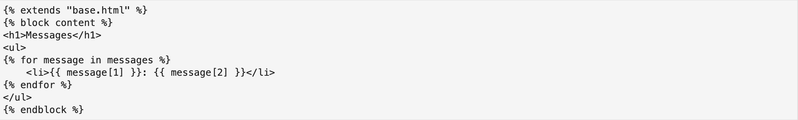

from flask import Flask, request, render_template
import sqlite3
from flask import g
import randomWelcome!
Today we will be creating a webapp using Python and Flask to submit and view messages. A “webapp” is exactly what it sounds like: it’s like an application (or, app) you can deploy it on the internet (or, web). In today’s blog, the app won’t actually be published on the internet, but we will still be accessing it on our local browser.
I will be describing how to set up this project in detail. If you want more details, a link to the project repository is here:
https://github.com/anikamisra/pic16b-hw3-webapp/
Section 0: Setting up files
There is a lot that goes into making a webapp. Here is a summary of where each file should go, so you know exactly how to build this Message Bank. We will be getting into the details of most of these files in this blog, so don’t worry if you don’t know what this means just yet. - app.py: This is the application script file, which is the main file that handles the flask application instance along with other functions. - base.html: this is the base page for the HTML website. Other HTML pages “inherit” from the base page. - submit.html: this web page contains the information necessary to submit a message, such as text box and username - view.html: this web page that you can use to view some random messages. - style.css: This CSS file allows you to modify your webapp to change up the fonts and colors. In this demo, we will be creating a pink website!
Note, when you create this project, you should create a folder to contain these files. 1. app.py should be in your main project directory.
2. base.html, submit.html, and view.html should be in a folder called “templates”, which is in your project directory folder
3. style.css should be in a folder called “static”. which is in your project directory folder
So here is what your files should look like:
With all this in mind, let’s go ahead and get started with our webap. # Section 1: Non-route functions in app.py
Let’s write the application script file. To do this, I will discuss, in detail, each of the functions used in the app.py file that are not “route” functions, which we will define later, also in the application script. The functions we define now are going to be used by the route functions later. Let’s start with the first function.
Function 1: get_message_db
This function handles database creation for messages. First, make sure to import the necessary packages into app.py:
Now, let’s create the method. The way this function works is: 1. First it will check if the SQL message database, called message_db, exists. 2. If the database doesn’t exist yet, then it will create a new one. 3. Open a connection to the message database and store it in g.message_db 4. Create a cursor with the database object (used for SQL commands) 5. Execute SQL command to create a “messages” table if it does not already exist 6. Return the database connection.
Here’s a look at the code:
def get_message_db():
"""
handles database creation for messages
"""
# check if message_db exists
if 'message_db' not in g:
# connect database
g.message_db = sqlite3.connect('messages_db.sqlite')
cursor = g.message_db.cursor()
# check for messages table
cursor.execute('CREATE TABLE IF NOT EXISTS messages (id INTEGER PRIMARY KEY, handle TEXT, message TEXT)')
return g.message_dbGreat! We’ve created our first method. But, what will this functio be used with? Now, let’s define the second method in our aplication script file:
Function 2: insert_message
This function will handle user insertion of messages into the database.
Here is how it works: 1. Connect database by calling get_message_db() 2. Connect cursor 3. Execute SQL command to insert message and user id into messages table 4. Run commit() function to ensure the row insertion has been saved 5. Close database connection
Here is what the code looks like:
def insert_message(request):
"""
insert message into database after user submission
"""
# connect database
db = get_message_db()
cursor = db.cursor()
cursor.execute('INSERT INTO messages (handle, message) VALUES (?, ?)', (request.form['user'], request.form['message']))
# save
db.commit()
# close the database connection
db.close()So, this function works by calling the previously defined function, get_message_db(). Furthermore, we can see how it specifically inserts the username and the message of the person who posted it. Don’t worry too much about “resquest.form” for now - we will get into this later.
Function 3: random_messages
The last non-route function we will define in our application instance file is the random_messages function. This function is used to generate 5 random messages that our in our database (or, fewer, if there aren’t 5 submitted messages yet). We will call this function when we view the messages in our webapp. Here is how it works: 1. Connect to database by calling Function # 1 2. Connect cursor and execute SQL command of selecting all messages 3. Define a cursor object, messages, that selects all messages and usernames submitted 4. Close database connection 5. Utilize random library to generate n messages from “messages” cursor object. If there are less than n messages in the database, then select however many are in the database.
Let’s take a look at the code:
def random_messages(n):
"""
returns n (or fewer) random messages for viewing
"""
# connect database and get messages
db = get_message_db()
cursor = db.cursor()
cursor.execute('SELECT * FROM messages')
messages = cursor.fetchall()
# close connection
db.close()
# return n messages (or, fewer if there aren't n messages)
return random.sample(messages, min(n, len(messages)))Great! Now, we have defined our non-route functions in the application, let’s get onto the route functions.
Section 2: Route functions in app.py
A route is a URL pattern that the Flask application responds to. We use a decorator, called “@app.route”, to ensure that the specific function is run when this URL pattern is visited. In your app.py file, add the following line:
app = Flask(__name__)This will create a flask web server instance no matter the module you are in. Now, let’s define the first route function.
Function 4: home page
This function will render the HTML template to create our home page. We want our default page to be a simple page that allows the user to navigate to wherever they want to go. So, we will only use the ‘GET’ method here.
# url route function for home page
@app.route('/', methods=['GET'])
def home():
# render submit.html page
return render_template('base.html')We specify the method as ‘GET’ because we will not be posting any data here. It is simply the home page that takes us to either submitting, or viewing a message. This template is the “base” that the other HTML pages, which are view.html and submit.html, will “inherit” from. Here is what base.html looks like:
base.html

As we can see, there are only two links on the page that take us to “submit” and “messages”. Now, let’s define the route functions for these two pages. Furthermore, we can incorporate the style.css file that we want in order to customize our website. In my style.css file, I made the background of my webpage pink. Here is what the home page looks like:
(We will learn more about how to get this running on your local browser in Section 3.)
So pink, so beautiful! (Note, I made it pink and changed the font in “style.css”.)
Now, let’s create the route functions to render “submit.html” and “view.html”, which will allow us to actually use those cute links that are on our home page.
Function 5: Submit page
In this function, we will render the submit.html template, which will allow us to actually submit messages! Yay! In order to do this, we will use both the ‘GET’ and ‘POST’ methods, since we need to respond to HTTP requests and also transmit the data of the submitted message. Here is how it works:
- Set message and user to none before anything has been inputted.
- Once the user has submitted the form (“post” button has been clicked), send in the data as an HTTP request.
- To do this, we use Flask’s “request.form”, which is a type of special dictionary used to store these HTTP requests
- Call the previously defined insert_message function with the request as an argument.
- Remember how we used “(request.form[‘user’], request.form[‘message’]) in the SQL command? This is where it comes from.
- Render submit.html template. We will “pass in” the user’s name and message because it will be used in the html page.
Here is what the function should look like:
# url route function for submit page
@app.route('/submit', methods=['GET', 'POST'])
def submit():
message = None
user = None
# handle user posting
if request.method == 'POST':
user = request.form['user']
message = request.form['message']
# call insert_message function
insert_message(request)
return render_template('submit.html', user=user, message=message)We will pass in user into submit.html because we want to thank the user for their submission. Here is what the submit.html page should look like:
submit.html
As we can see, submit.html extends the base.html page, and thanks the user for their submission. It also stores a box for message and user. We will see what this looks like in Section 3. As of right now, the “message” variable is not used, but it is still handy to pass it in in case we want to customize our submit.html function later and use that variable.
Function 6: View messages page
We are almost done with our functions! Finally, let’s create a function to render the view.html page. This will allow us to see 5 (or less) randomly generated messages that have been inputted.
Once again, we are only using the ‘GET’ method here because we are not transmitting any data - only receiving the HTTP requests. The “messages” variable utilizes the previously defined random_messages() function to obtain and store 5 random messages that are in our messages table in the database. Then, it renders the view.html page and passes in the 5 obtained messages.
Here is what the function looks like:
# url route function for view messages page
@app.route('/messages', methods=['GET'])
def messages():
# generate 5 random messages to view
messages = random_messages(5)
return render_template('view.html', messages=messages)But how do the messages get used? Let’s take a look at view.html:
view.html

As we can see, we display the 5 random messages we obtained in an ordered list.
Every time we click “View messages” on our webapp, it will rerun the url route function and obtain 5 NEW randomly selected messages.
Now, it’s time to see all this in action! In the next section, I will use screenshots to show how the Message Bank webapp really works!
Section 3: Demo of Message Bank
Let’s show how this website really works. First, navigate to the directory of your project. Activate the desired terminal of your choice. Then, in your terminal, run the following line:
export FLASK_ENV=development flask run
Now, in your terminal, you should see something like this:
The line “Running on http://….” will give you the local host ID. Paste this line into the browser of your choice. I already showed us what the “home page” looks like. Now, assume that I clicked on the “Submit Message” link on the homepage. In this example, my username is going to be “barbielover3000”. Here is what I will submit:
(Note that my URL contains the ending “/submit”, which is exactly how we defined the function that renders the submit.html file!)
Now that I’ve submitted, we see how my username is used to thank me for my submission. Recall that we passed this information in to the submit.html template!
Now, let’s click “View Messages” and see if we can see the message I submitted.
There it is! Wow, I didn’t know there were so many Anika Misra’s. What a cool name.
Section 4: Summary and takeaways
In this blog post, we learned how to make a simple webapp that acts as a message bank. We created an application script file that contained 6 different functions: 3 for the different pages we wanted to render, and 3 more for the functions that were used when we rendered these pages. We experimented with both the ‘POST’ and ‘GET’ methods of HTTP requests and data.
Want to know how I made this website so pink and beautiful? I have attached my “style.css” file at the very end. Now, you can make your own message bank using Python and Flask! Happy coding.